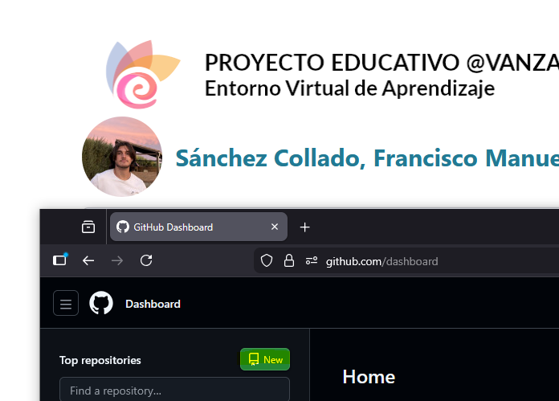
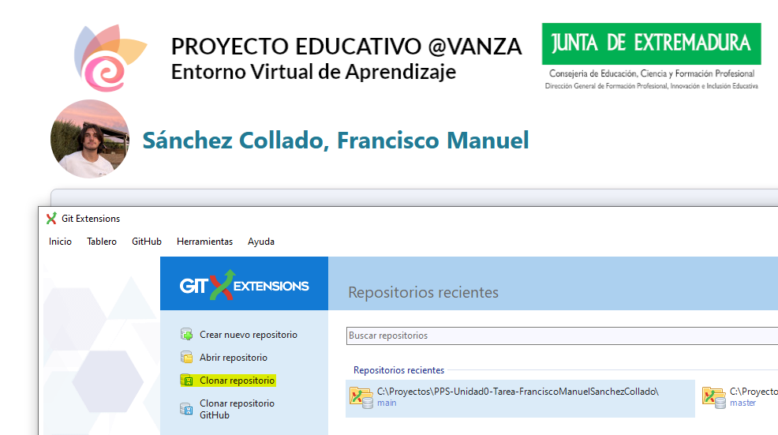

Git
A continuación, se detallan los pasos seguidos para la creación de este proyecto y su sistema de carpetas.
Importante: Por efectividad y al ya conocerse el funcionamiento de Git, este proyecto se ha creado mediante interfaz gráfica.
Creación del repositorio
El repositorio se ha creado mediante el botón de "New" de la página GitHub:

Una vez creado, se ha clonado a local mediante el enlace HTTPS en el botón "Code":

Una vez conseguido el enlace, lo clonamos en local con la herramienta Git Extensions


Una vez con el repositorio en local, se pueden crear la estructura de carpetas y archivos mediante el explorador de archivos de Windows.